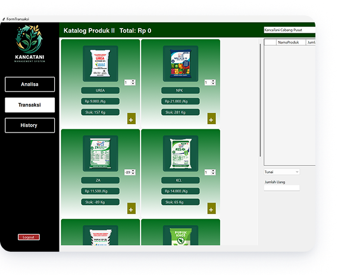

Kanca-Tani
project OOP C# yang di integrasikan dengan Database juga materi PSQL tingkat lanjut dari materi Semester sebelumnya. Kami mengambil studikasus Koperasi Tani di Desa Krajan, untuk memudahkan dalam estimasi biaya kebutuhan pupuk berdasar luas lahan. Jadi nanti output akan memunculkan haarga dari pupuk dengan jenis tanaman yang dipilih serta ada Waktu Pemupukan.